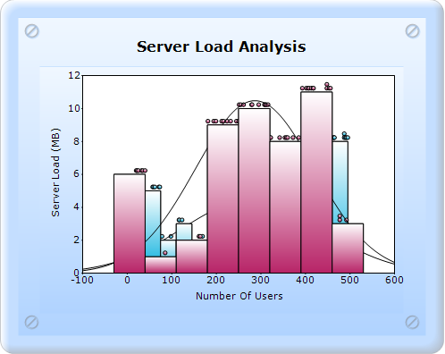
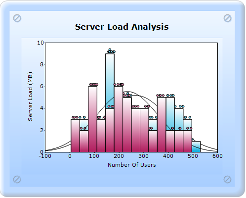
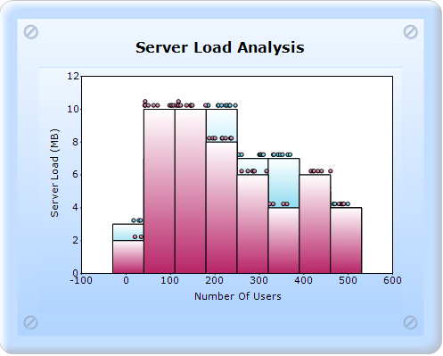
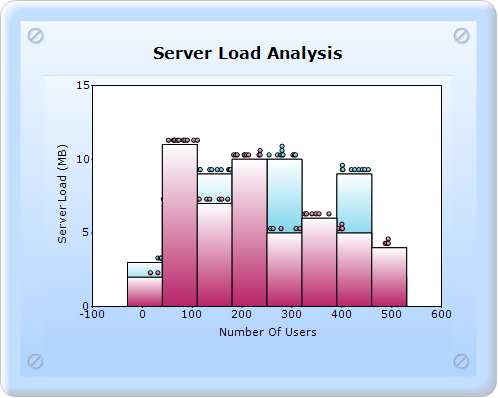
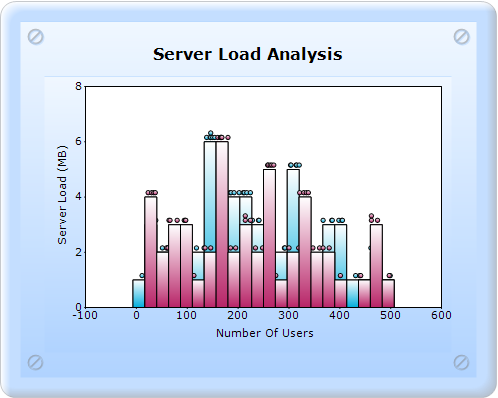

The properties that fall under the Histogram properties are the following:
· DrawHistogramNormalDistribution
· NumberofHistogramIntervals
· ShowHistogramDataPoints
The normal distribution curve is drawn by setting the DrawHistogramNormalDistribution property of the ChartSeries class to true.
|
Details | |
|
Possible values |
True or False |
|
Default value |
False |
|
2D/3D limitations |
No |
|
Application to chart element |
All series |
|
Application to chart types |
Histogram chart |

Figure 193: Histogram chart with NormalDistribution
NumberOfHistogramIntervals gets or sets the number of histogram intervals.
|
Details | |
|
Possible values |
Any numeric value. |
|
Default value |
10 |
|
2D/3D limitations |
No |
|
Application to chart element |
All series points. |
|
Application to chart types |
Histogram chart |

Figure 194: Histogram chart with Number of Intervals 20
ShowHistogramDataPoints indicates if the histogram data points should be shown.
|
Details | |
|
Possible values |
True - Displays the datapoints. False - Hides the datapoints. |
|
Default value |
True |
|
2D/3D limitations |
No |
|
Application to chart element |
Any series |
|
Application to chart types |
Histogram chart |

Figure 195: Histogram chart with ShowDataPoints as false

Figure 196: Histogram chart with ShowDataPoints as true
5.2.1.3.3.4.1 Builder
To create a Histogram chart with the Histogram properties through Builder:
1. In Controller, return view to the corresponding View page.
|
[C#] public ActionResult SimpleChart() { return View(); }
|
2. In the View page, invoke the ChartBuilder by using the control ID as the first argument.
3. Create the Series with the SeriesType as Histogram, add the Points, and set the style.
4. Set the ChartArea and ChartModel properties.
5. Set the HistogramConfigItems, ShowHistogramDataPoints, NumberofIntervals, and ShowHistogramDataPoints.
|
View [ASPX]
<% Random r = new Random(); %> <%= Html.Chart("SimpleChart").Series(series =>{ series.Add().Type(Syncfusion.Windows.Forms.Chart.ChartSeriesType.Histogram) .Text("Server 1") .ConfigItems(configitem => { configitem.HistogramItem(histoItem => { histoItem.ShowDataPoints(false) .NumberOfIntervals(30) .ShowNormalDistribution(false); }); }).Points(points => { for (int j = 0; j < 50; j++) points.Add(r.Next(10, 500), 1000); }); series.Add().Type(Syncfusion.Windows.Forms.Chart.ChartSeriesType.Histogram) .Text("Server 2") .ConfigItems(configitem => { configitem.HistogramItem(histoItem => { histoItem.ShowDataPoints(false) .NumberOfIntervals(30) .ShowNormalDistribution(false); }); }).Points(points => { for (int j = 0; j < 50; j++) points.Add(r.Next(10, 500), 1000); }); }).ChartArea(area=>{ area.XAxesLayoutMode(Syncfusion.Windows.Forms.Chart.ChartAxesLayoutMode.Stacking); }).Skins(ChartModelSkins.Office2007Blue) // ----------------- Set the ChartArea and Chart Model Properties. Refer to the Histogram chart type link--------------------------------- %>
|
|
View [cshtml]
@{ Random r = new Random(); } @{ Html.Chart("SimpleChart").Series(series =>{ series.Add().Type(Syncfusion.Windows.Forms.Chart.ChartSeriesType.Histogram) .Text("Server 1") .ConfigItems(configitem => { configitem.HistogramItem(histoItem => { histoItem.ShowDataPoints(false) .NumberOfIntervals(30) .ShowNormalDistribution(false); }); }).Points(points => { for (int j = 0; j < 50; j++) points.Add(r.Next(10, 500), 1000); }); series.Add().Type(Syncfusion.Windows.Forms.Chart.ChartSeriesType.Histogram) .Text("Server 2") .ConfigItems(configitem => { configitem.HistogramItem(histoItem => { histoItem.ShowDataPoints(false) .NumberOfIntervals(30) .ShowNormalDistribution(false); }); }).Points(points => { for (int j = 0; j < 50; j++) points.Add(r.Next(10, 500), 1000); }); }).ChartArea(area=>{ area.XAxesLayoutMode(Syncfusion.Windows.Forms.Chart.ChartAxesLayoutMode.Stacking); }).Skins(ChartModelSkins.Office2007Blue).Render(); // ----------------- Set the ChartArea and Chart Model Properties. Refer to the Histogram chart type link--------------------------------- } |
6. Build and run the application, to get the following output:

Figure 197: Histogram chart with ShowNormalDistribution as false, ShowDataPoints as false, and NumberofHistogramIntervals as 30.
5.2.1.3.3.4.2 ChartModel
To create a Histogram chart with the Histogram properties through ChartModel:
1. In Controller, create an instance for MVCChartModel.
2. Create an instance for ChartSeries and set the seriestype as Histogram, and set the properties.
3. Set the ChartModel properties.
4. Set the ShowHistogramDataPoints, NumberofIntervals, and ShowHistogramDataPoints properties of the Histogram Config Item.
5. Return the View to the corresponding View page after setting the ChartModel to the ViewData.
|
[C#]
public ActionResult SimpleChart() { MVCChartModel chartModel = new MVCChartModel(); Random r = new Random(); for (int i = 1; i <= 2; i++) {
// Create chart series and add data points to it.
ChartSeries Histogram = new ChartSeries("Series" + i.ToString(), ChartSeriesType.Histogram); for (int j = 0; j < 50; j++) Histogram.Points.Add(r.Next(10, 500), 1000);
Histogram.Text = Histogram.Name; Histogram.ConfigItems.HistogramItem.NumberOfIntervals = 30; Histogram.ConfigItems.HistogramItem.ShowNormalDistribution = false; Histogram.ConfigItems.HistogramItem.ShowHistogramDataPoints = false; // Add the series to the chart series collection. chartModel.Series.Add(Histogram); }
// --------------------- Set the chartarea and chartmodel Properies---------------
ViewData.Model = chartModel; return View(); }
|
6. In Aspx, invoke the ChartBuilder by using the control ID as the first argument, and convert the ViewData to MVCChartModel and set it as the second argument.
View [ASPX]
<%= Html.Chart("SimpleChart",(MVCChartModel)ViewData.Model) %>
View [cshtml]
@(new HtmlString(Html.Chart("SimpleChart",(MVCChartModel)ViewData.Model).ToString()) )
7. Build and run the application, to get the following output:
Figure 198: Histogram chart with ShowNormalDistribution as false, ShowDataPoints as false, and NumberofHistogramIntervals as 30